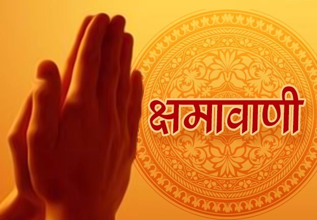

जैन धर्म में देवी-देवता |
|
तीर्थंकर |
- जैन धर्म में 24 तीर्थंकर हैं, जो मानवता को मोक्ष और धर्म का मार्ग दिखाने वाले महान आत्माएं हैं।
- भगवान आदिनाथ (ऋषभदेव) पहले तीर्थंकर हैं और भगवान महावीर चौबीसवें और अंतिम तीर्थंकर हैं।
- तीर्थंकरों को पूजा और ध्यान के माध्यम से याद किया जाता है।
|
|
यक्ष और यक्षिणी |
- विष्णु संसार के पालन और रक्षा के देवता हैं।
- पत्नी: लक्ष्मी (धन और समृद्धि की देवी)।
- वाहन: गरुड़।
- प्रतीक: शंख, चक्र, गदा, पद्म।
- विष्णु के दस अवतार (दशावतार):
मत्स्य, कूर्म, वराह, नरसिंह, वामन, परशुराम, राम, कृष्ण, बुद्ध, और कल्कि।
- विष्णु के प्रमुख मंदिर: तिरुपति, बद्रीनाथ।
|
 |
महेश/शिव |
- जैन धर्म में यक्ष और यक्षिणियों को तीर्थंकरों के रक्षक देवता माना जाता है।
- यक्ष: ये पुरुष देवता होते हैं, जैसे कुबेर।
- यक्षिणी: ये महिला देवियां होती हैं, जैसे पद्मावती और अंबिका।
- इनका महत्व तीर्थंकरों के सहायक या रक्षक के रूप में होता है।
|
 |
लोकदेवता |
- जैन धर्म में कुछ लोकदेवताओं और देवियों को पूजा जाता है, जो श्रद्धालुओं की आस्था का प्रतीक हैं।
- ये देवता सांसारिक जीवन की समस्याओं को हल करने के लिए पूजनीय होते हैं।
|
|
सिद्ध परमात्मा |
- जैन धर्म के अनुसार, सिद्ध वे आत्माएं हैं जो कर्म बंधन से मुक्त होकर मोक्ष में पहुंच चुकी हैं।
- ये परम शुद्ध आत्माएं हैं, जिन्हें पूजा जाता है क्योंकि वे मोक्ष का आदर्श रूप हैं।
|
|
देवता और स्वर्ग |
- दुष्टों का संहार करने वाली शक्ति।
- वाहन: सिंह।
- प्रतीक: तलवार, त्रिशूल, चक्र।
|
जैन धर्म के त्योहार |
|
पर्युषण पर्व |
- पर्युषण जैन धर्म का सबसे महत्वपूर्ण त्योहार है।
- श्वेतांबर जैन इसे 8 दिनों तक और दिगंबर जैन इसे 10 दिनों तक मनाते हैं।
- यह आत्मा की शुद्धि, तपस्या, प्रार्थना और क्षमा का पर्व है।
- इस दौरान जैन धर्म के अनुयायी उपवास, प्रवचन और स्वाध्याय करते हैं।
- अंतिम दिन को क्षमावाणी दिवस के रूप में मनाया जाता है, जब सभी एक-दूसरे से क्षमा मांगते हैं।
|
|
महावीर जयंती |
- यह जैन धर्म के 24वें तीर्थंकर भगवान महावीर के जन्मदिन का पर्व है।
- इसे बड़े उत्साह और श्रद्धा के साथ मनाया जाता है।
- इस दिन जैन धर्म के अनुयायी भगवान महावीर की मूर्ति का अभिषेक और शोभा यात्रा निकालते हैं।
- प्रवचन, ध्यान, और गरीबों को दान करने का भी महत्व है।
|
 |
दीपावली |
- जैन धर्म में दीपावली का महत्व भगवान महावीर के मोक्ष प्राप्ति के दिन से जुड़ा हुआ है।
- इस दिन भगवान महावीर ने निर्वाण प्राप्त किया था।
- जैन अनुयायी इस दिन घी के दीपक जलाकर भगवान महावीर को स्मरण करते हैं।
- जैन धर्म के ग्रंथ कल्पसूत्र का पाठ किया जाता है।
|
|
अष्टान्हिका पर्व |
- यह पर्व वर्ष में तीन बार आता है: ग्रीष्म, वर्षा और शरद ऋतु में।
- यह 8 दिनों तक चलता है, जिसमें जैन धर्म के अनुयायी तपस्या, ध्यान और पूजा करते हैं।
- यह पर्व आत्मा की शुद्धि और धर्म पालन के लिए महत्वपूर्ण माना जाता है।
|
|  |
क्षमावाणी दिवस |
- यह पर्व पर्युषण के बाद मनाया जाता है।
- इस दिन जैन धर्म के अनुयायी एक-दूसरे से "मिच्छामि दुक्कडम्" कहकर क्षमा मांगते हैं।
- इसका अर्थ है: "यदि मैंने जानबूझकर या अनजाने में कोई गलती की हो, तो मुझे क्षमा करें।"
|